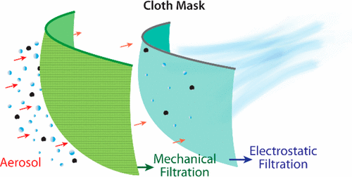

The combination of materials tackles two methods of collecting aerosols: interception and electrostatic attraction. Tightly woven fabrics, such as dense cotton, are a mechanical filter for larger droplets, and silk and chiffon are a electrostatic filter for smaller droplets (1). This compound filter filtered 80-99% of particles (1), nearly as well as an N95 mask. For small particles (less than 300nm), this hybrid outperformed the N95. Cotton/chiffon filtered 97% of particles, and cotton/silk filtered 94%, while the N95 filtered 85% (2).
Order of the layers may matter as well. Smaller particles can be captured more effectively with electrostatic attraction at low velocities. Having the silk/chiffon on the inside means that particles will be slowed down by the outer layer before reaching the second barrier.
You want a denser fabric, so for t-shirts that you don't know the thread count for, do a simple light test to see if it's a good material. Hold the fabric up to a light, and if a lot of light passes through, to the point you can see the threads clearly, it's not a good fabric (3).